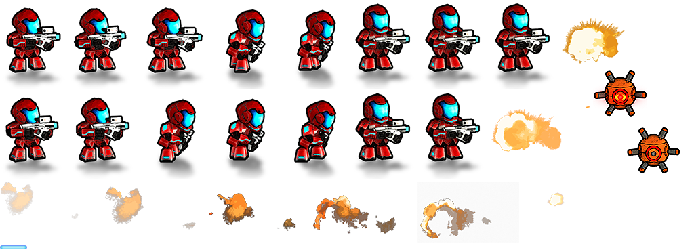

スプライトの使用
中級 プログラマー
スプライトをシーンに追加するには、スプライト コンポーネントをエンティティに追加します。その後は、スクリプトでスプライトを制御できます。
スプライト コンポーネントを追加する
シーン エディターで、スプライトを追加するエンティティを選択します。
Tip
エンティティを作成するには、シーンまたはエンティティ ツリーを右クリックして、［Empty entity］を選択します。
［Property grid］で［Add component］をクリックして、［Sprite］を選択します。

スプライト コンポーネントがエンティティに追加されます。
［Asset view］からスプライト コンポーネントの［Source］フィールドに、スプライト シートをドラッグします。
または、
 (［Pick an asset up］) をクリックします。
(［Pick an asset up］) をクリックします。
そこで、スプライト シートを選択します。

スプライトがエンティティに追加されます。
スクリプトでスプライトを使用する
実行時にスクリプトを使用してスプライトをレンダリングできます。そのためには、スプライト コンポーネントを含むエンティティにスクリプトをアタッチします。
スクリプトをエンティティに追加する方法については、「スクリプトを使用する」を参照してください。
コード サンプル
このスクリプトは、1 秒ごとにインデックスの順序でスプライトを順番に表示します。スプライトのインデックスの最後に達すると、ループします。
using Stride.Rendering.Sprites;
public class Animation : SyncScript
{
// 宣言されたパブリック メンバー フィールドとプロパティが Game Studio に表示される。
private SpriteFromSheet sprite;
private DateTime lastFrame;
public override void Start()
{
// スクリプトを初期化する。
sprite = Entity.Get<SpriteComponent>().SpriteProvider as SpriteFromSheet;
lastFrame = DateTime.Now;
}
public override void Update()
{
// 新しいフレームのたびに処理を行う。
if ((DateTime.Now - lastFrame) > new TimeSpan(0, 0, 1))
{
sprite.CurrentFrame += 1;
lastFrame = DateTime.Now;
}
}
}